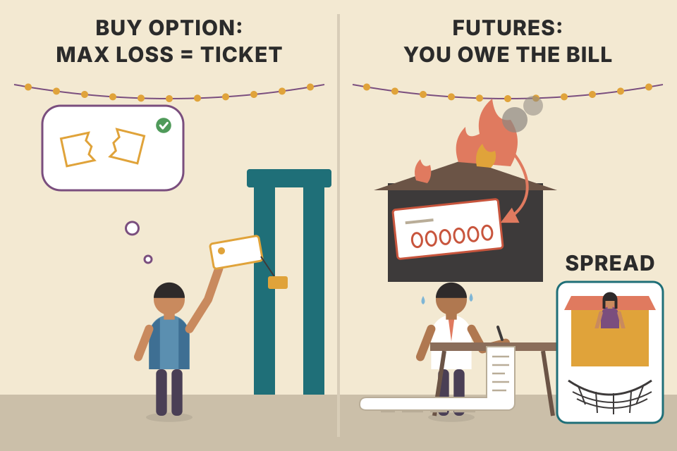
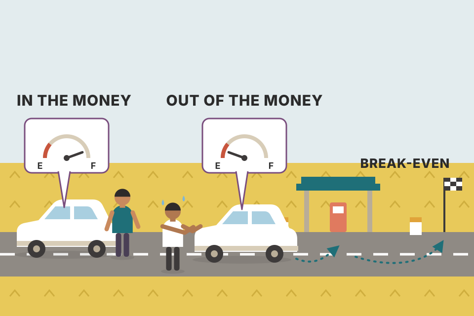
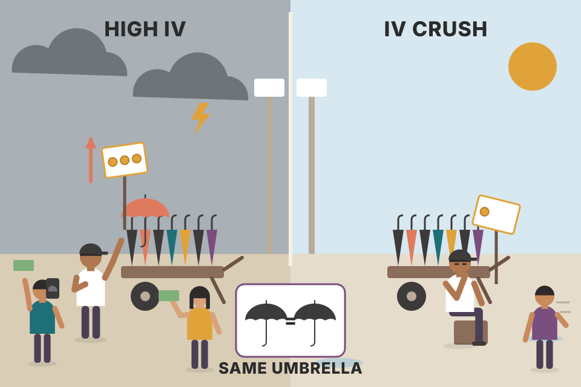
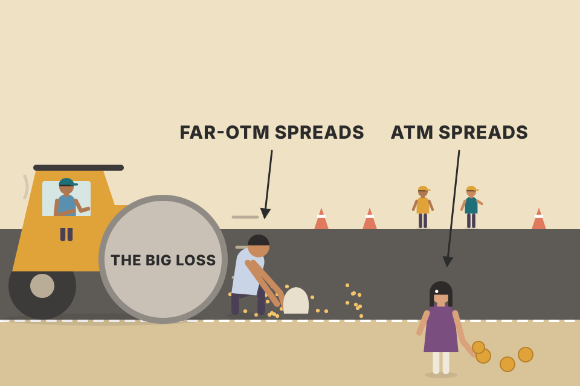

Carter's options primer: why he'd pick options over futures, Forex or crypto, how a premium is made of real value plus a "time and fear" extra, why cheap out-of-the-money calls drain retail accounts, his Delta 0.70 rule for directional trades, the implied-volatility crush, and when to turn a naked sale into a spread. Every chart below runs on simulated prices and a standard pricing model (Black–Scholes, marked "beyond the book"). The book's own numbers are quoted as given. Press the button to roll a new simulated market: it changes the Goldman Sachs squeeze step-through (04), the gap-down put sale (05), the pooled simulations (03, 06b) and the diagonal walk-through (06b).
Note: in this PDF copy, Figures 4.1–4.5 are blank (the images are missing). Every number below comes from Carter's text; the charts are my own reconstructions of the ideas.
Chapter 3 ends by asking what to trade (pdf p92). Chapter 4 answers it, then turns into a short options course. Each box below is one plate.
The chapter opens with a Thomas Dewar line about a gambler's wife (a wife can put up with a gambling husband only if he keeps winning). Then Carter answers the beginner's question: stocks, Forex, crypto, futures or options?
Two kinds of retail option traders. The first knows nothing about options, or tried a few trades that failed and gave up. The second bought an option (probably an out-of-the-money call), lost, then discovered you can sell options and collect the premium. That trader goes down the rabbit hole, learns every way to sell premium "without risk", spends hours legging in and out, and makes a little each month for many months, until one month it goes very wrong, very fast. Knowing everything about options still didn't produce a steady income. Carter's lesson: with options, too much knowledge isn't necessarily good. Keep it simple.
His approach: a few basic strategies. His rule of thumb is that if he couldn't explain a strategy to his 12-year-old, it's too complicated. He trades both directional plays and premium collection. This chapter is also the reference for the option strategies used with the setups in Part 2 (come back here if you forget what Delta or an IV crush is). You don't need to master "the Greeks"; simple strategies work without knowing what Gamma or Vega do.

Buying an option is buying a ticket: the most you can lose is the ticket price. A leveraged futures or Forex position is signing a contract: if the venue burns down overnight, you still owe the full bill. Selling a naked option is selling tickets with no limit on what you might have to refund. A spread is selling tickets with insurance already bought.
Simulated set-up (not in the book): a $10,000 account, a $100 underlying, 30-day options priced with Black–Scholes at 30% volatility before the gap, rising after it (to about 60% for a 23% gap). The leveraged line is 10:1, i.e. $100,000 of exposure, the same exposure as 10 option contracts. −23% is the size of the Swiss franc move Carter mentions.
An option buyer's loss is capped by the premium, because the option's value can't go below zero. A leveraged position has no floor: 10:1 leverage means a 10% gap wipes out the whole account and anything beyond that is debt to the broker. A naked put seller is in almost the same place as the leveraged buyer: they've promised to buy the stock at the strike however far it falls. The put spread caps that promise at the width between the two strikes, which is Carter's point that a spread is a naked sale with a fixed amount of risk.
trader_returns_reality.md is an honest counterweight: in SEBI's FY26 study, about 88% of Indian options traders lost money, against about 66% of futures traders. "Forgiving" (a capped loss per trade) is not the same as "likely to make money". Carter's rules in the plates below (buy in-the-money, watch IV, spread your sales) are about avoiding the usual retail mistakes.The story. You're flying Chicago to Singapore, 17 hours, and you've been upgraded to first class for free. A hedge-fund manager stuck in coach wants your seat. He'll pay at most $1,500. You point out it would have cost him $20,000 online; he points out you paid nothing. You agree he can have it for the last 12 hours if you keep it for the first 5. After 5 hours he offers only $1,200: there are 12 hours left now, not 17. You say you'll think about it, fall asleep for 9 hours, and wake up to an offer of $300, with 3 hours left. The seat will be worth nothing once the plane lands, so you take it. That's premium decay on an at-the-money call: the closer to the end of the flight (expiration), the less anyone will pay for the seat (the premium).
The dots are the story's three offers. The line is how an at-the-money option's time value shrinks in the standard model: in proportion to the square root of time left. Half the time left keeps about 71% of the value, not 50%. That's why decay looks slow at first and steep at the end. The story's last offer ($300) falls even faster than the model; it's a story, not data.
His first options trade, in high school, was buying Intel (INTC) calls without knowing what they were. What he learned afterwards:
| Option | Moneyness | Price (book) | Per contract | Intrinsic | Premium (time value) |
|---|---|---|---|---|---|
| $390 call | ITM | $22.75 | $2,275 | $9.26 | $13.49 |
| $400 call | ATM | $17.00 | $1,700 | $0 | $17.00 |
| $410 call | OTM | $12.30 | $1,230 | $0 | $12.30 |
| $390 put | OTM | $12.65 | $1,265 | $0 | $12.65 |
| $400 put | ATM | $16.95 | $1,695 | $0.74 | $16.21 |
| $410 put | ITM | $22.25 | $2,225 | $10.74 | $11.51 |
Prices are from Carter's text (pdf p96–97). The intrinsic and premium columns are my arithmetic. The $400 put is $0.74 in-the-money at $399.26; Carter calls it at-the-money, which is the usual label when a strike is this close.
Why is the $390 call $22.75 and not just its ~$10 of real value, and why do the $400 and $410 calls cost anything at all? Because, like the seat, people will pay a premium for what might happen: the stock could rally hard before expiry. The longer the time to expiry (the longer the flight), the more premium they'll pay. Why not just buy the stock? Because they don't want to pay that much. They pay a premium for the right to buy, with limited risk and leverage. The $400 and $410 calls are pure premium; the ITM $390 call is a mix of real value and premium.
An option price is a box with two compartments. The bottom compartment (intrinsic value) holds hard cash you'd get today. The top compartment (premium) holds hope, and the hope leaks out a little every day until expiry, when only the bottom compartment is left. Move the slider: at expiry only the teal part survives.
Premium is the price of uncertainty. More time and more expected movement (volatility) mean a wider range of possible stock prices at expiry, and a call holder keeps all of the upside but loses at most the price paid. That one-sided payoff is worth paying for, and its value shrinks as the time left shrinks. The seller is paid to carry the other side of it.
Put the book's six prices into Black–Scholes (zero interest, no dividends, 24 days) and solve for volatility: they imply about 40–44% a year. The model's deltas come out around 0.60 for the $390 call, 0.51 for the $400 call and 0.42 for the $410 call. These are modelled numbers for this one snapshot. Carter's later AAPL figure of about 35% IV (plate 05) is from a different date.
trading_equations.md §13 has the Black–Scholes formulas and put–call parity, with a Nifty example. Parity checks Figure 4.1: $400 call − $400 put should be about $399.26 − $400 = −$0.74 at zero rates; the book's quotes give $17.00 − $16.95 = +$0.05. That's close, given rates, dividends and bid–ask spreads.Carter's main reason people lose money in options: they mostly buy cheap out-of-the-money calls. In Figure 4.1 the $410 AAPL call is $12.30, 100% premium, no real value at all. The trader looked at the $390 call, decided $22.75 was "too expensive", and bought the $410 instead.
Buying an option just because it's cheap is, in Carter's word, a ridiculous strategy. The common pattern: (1) retail traders buy OTM calls without looking at fair value or implied volatility, and (2) professionals happily sell them as many as they want. He knows floor traders with more than 20 years in the pit who have never once bought an out-of-the-money call. OTM options do have their place, but as the exception, not the rule. That leads to his first strategy (plate 04).

The $390 call is a car that already has $9.26 of fuel in the tank. The $410 call is an empty car parked $10.74 away from the petrol station: before it is worth anything, the stock has to push it all the way there, and then another $12.30 further to cover what you paid for it.
The break-even is strike + price paid: $412.75 for the $390 call and $422.30 for the $410 call. The ITM call's break-even is $9.55 closer, because you paid for $9.26 of real value that a moderate move keeps. All of the OTM call's price is time value, which goes to zero at expiry unless the stock blows through the strike.
Simulated (not in the book): AAPL starts at $399.26, moves as a random walk for 24 days, and you buy the $390 call at $22.75 and the $410 call at $12.30 (the book's prices, which imply about 44% and 41% volatility). Each path is held to expiry. 20,000 paths (10,000 mirrored pairs) per setting. The "exact model expectation" is the same model's average solved by formula, so you can see how close the simulation gets. Simulated results are not evidence about real markets.
With no edge (drift 0, realised volatility near the ~41–44% the prices imply), both averages sit within a few percent of zero: fairly priced options give no free lunch either way. The small differences come from each price's own implied volatility (the $390 call is priced a little richer than the $410). What differs is the shape. The ITM call wins more often and with smaller swings. The OTM call loses everything far more often and makes up for it with rare big wins. Add drift (a real directional edge) and both do better, the ITM call far more consistently. Raise realised volatility above 42% (a "squeeze" that moves more than priced) and the OTM call improves most. That is exactly Carter's exception in plate 04.
A cheap OTM option is tempting because it could turn $1.00 into $15.00, the dream trade that lets you quit your job and travel. It could happen, the way a royal flush could happen in poker. Carter would rather raise his odds of a consistent income than swing for the fences.
The Greeks. Figure 4.2 shows an option chain with Delta, Gamma, Theta and Vega. For his approach you only need Delta: how much the option price moves for each $1.00 move in the stock.
The flaw he exploits. Market makers price OTM options as if volatility will stay constant. It doesn't. Setups like squeezes mark moments when a sharp, bigger-than-expected move is more likely than the options are pricing in. He calls these situations gold. Most of the time OTM options expire worthless; sometimes they explode. Only when a setup says the odds of an explosion are up does he add a few OTM calls, as part of a "basket" on one stock: for example, buy ITM calls, sell put credit spreads and buy OTM calls together. That combines premium decay in his favour with a shot at an explosive move.
Pure directional plays. Here the option is just a cheaper way to ride the stock. His favourite setup for this is the squeeze (covered later in the book), which flags a high chance of a larger-than-expected move. He buys an ITM option with Delta 0.70 or higher, so the option gains about 70 cents per dollar the stock moves in his favour. Bonus: as the stock moves his way, the option goes deeper in-the-money and Delta rises. The first 2 points might add $1.40; the next 2 points $1.60, as Delta climbs from 0.70 to 0.80. A far-OTM option stays at a low Delta for a long time.
Buying far-OTM options is lose/lose unless you've spotted a high-probability setup for an explosive move, or you have inside information. His example: someone bought $1.4 million of far-OTM puts a few weeks before Bear Stearns collapsed and made a fortune.
Modelled (not the book's figure): Black–Scholes deltas for a $400 stock, zero rates. At 35% volatility the 2-day $395 call comes out at Delta ≈ 0.69, the same as Carter's reading. That's partly coincidence, since the figure's stock price isn't in the text.
Delta is roughly the model's probability that the option finishes in-the-money (strictly, N(d₁); the "risk-neutral" probability is N(d₂), slightly lower for calls). With 2 days left the stock can't travel far, so strikes just $5 below the price are already near-certain winners (high Delta) and strikes $20 above are near-certain losers. With 23 days left, more outcomes are possible, every Delta drifts toward 0.5, and you have to go deeper in-the-money to reach 0.70. That's point #4. The rise in Delta as the stock moves your way is Gamma, the Greek Carter says you can skip, at work.
His favourite short-term option swing trade lasts one to three days, on hourly charts, using the squeeze:
Simulated hourly bars built to show a range, then a breakout, then a stall (roll a new market for another version). Squeeze dots: Bollinger Bands (20, 2σ) inside Keltner Channels (20, 1.5 × ATR). Histogram: a common public reconstruction of squeeze momentum; "darker" = the bar is smaller than the one before, and the exit here waits for two such bars in a row (my rule, to avoid one-bar noise). None of this is Carter's exact code; his squeeze is Chapter 11. Option value: Black–Scholes, 30 days, 28% volatility, strike = highest $2.50 strike with Delta ≥ 0.70 at entry. The $2 stop is on the stock.
Exit on the stock, not on hope. He wants the option to move as nearly in lockstep with the stock as possible. There's no need to hold to expiry just to find out what happens, or to hope it quadruples: he buys on a signal in the stock and closes on a signal in the stock. Most options books talk about holding until expiration; he rarely does. It's fine to make a living from what he calls BASAARP: buying and selling at a reasonable price.
More advanced traders could also play this signal (a high chance the stock moves up a point or two) with spreads, some covered in plate 06. The key is a clean signal on the stock first, then an option strategy to leverage it. He's usually fine with buying a Delta 0.70 option and exiting on the stock's movement. Better still, he says, is to also sell put credit spreads in that situation, since premium decay then works for you. He often does both.
A Delta 0.70 call is a dog on a short lead: wherever the stock walks, it follows closely. A far-OTM call is a dog on a 20-metre lead: the stock can walk quite far before the lead even goes tight.
The biggest mistake new option traders make is ignoring implied volatility (IV). Part of an option's price comes from the stock; another significant part comes from IV.
Modelled (not in the book): the $400 call on a $400 stock bought the day before earnings at the "before" IV, then revalued one day later at the new price and the "after" IV, with Black–Scholes and zero rates.
For an at-the-money option, the premium is almost proportional to IV: premium ≈ 0.4 × stock × IV × √(years left). Going from 35% to 100% multiplies it by about 2.85 in the model, which is Carter's "essentially triples". After earnings, the stock must move far enough that the gain in real value outweighs the IV that disappears. The readout shows that break-even move. It's often bigger than the move the stock actually makes.
On August 18, 2011, GS gapped down more than $3.00. A gap down brings some panic at the open: owners buy puts to protect themselves, and the gap itself adds uncertainty. For about 5 to 10 minutes after the open, put prices are artificially high: IV pops. Most of the news is already in the price at the open, though, and after the first flurry a stock often spends the day in a quiet, choppy range. As things calm down IV drops, and so do option prices. The trade is to sell puts to the panicking buyer and buy them back once it's quiet:
The book gives the sale price as $1.20 in step 3 and $1.50 in step 4. The model below uses its own price; treat both book figures as illustrations.
Simulated 5-minute bars shaped like Carter's description (gap, early dip, quiet chop, drift back up). The $110 put is valued with Black–Scholes, 16 days to expiry, IV 21.5% normally and boosted at the open, fading over about half an hour. The settings are tuned so that a normal day lands in the book's range: a sale around $1.20–$1.50, bought back near $0.60. This is an illustration, not a backtest.
Selling naked calls and holding them overnight is the riskiest option strategy there is. Carter's example: sell 20 naked calls at $5.00 (collect $10,000). Overnight a takeover lifts the stock $80. The calls are now worth $160,000, a loss of $150,000. Verticals and credit spreads protect a seller from that kind of surprise.
Assumes the calls were sold at the money, so after the jump each is worth the jump in intrinsic value, as in Carter's example. A spread's long call is bought that many dollars higher. To keep the comparison simple, the credit is the same with or without protection (in reality the long call costs a little).
Summary. When buying, avoid high IV, which is typically right after a huge move (the day a stock is already up $10 and the urge is to buy OTM calls) and right before earnings, unless the strategy is specifically for a stock that tends to rally into earnings. Wait for a quiet period, such as a squeeze, which forms while the market is consolidating and dull. High IV is the time to sell. For several years, every time IBM approached $280 it sold off, so floor traders sold naked IBM $280 calls each time and collected the rich premium, while retail buyers hoping for a breakout got hurt. The floor's saying was Sell the 80s and buy a Mercedes.
That party ended the day IBM broke through $280 and kept going. In the GS trade he sold naked puts (not backed by stock) at high IV and bought them back when IV normalised. You can also do it as a spread. If he sells naked, he sells small size.

An umbrella seller outside a stadium. Ten minutes before the forecast storm, umbrellas sell at triple price. The storm passes (or never comes) and nobody will pay for one any more, even though nothing about the umbrellas changed. IV is the storm forecast built into the price.
trading_equations.md §13: traders run Black–Scholes backwards to get IV from the market price. §14: expected move ≈ price × IV × √(days ÷ 365). With IV at 100% for one day, that's about ±5% for a $400 stock, the move earnings buyers are paying for.Two choices. For a directional play in a quiet-IV period: buy an ITM option or sell a credit spread. Or sell options in high-IV periods and wait for IV to collapse. Selling naked is riskier than buying, even though it works more often. You "normalise" that risk by selling as a spread, which fixes the risk. A buyer can lose only what was paid. A naked call seller's loss is in theory unlimited, since the stock could go to infinity (he hasn't seen one do it yet), and a big gap on an upgrade or takeover isn't a risk worth taking when you can simply turn the naked call into a fixed-risk spread.
Why sell at all? Apart from IV crush, the main reason to sell options, especially OTM ones, is that they lose premium every day. Carter's image: the premium is a juicy peach covered in ants. Each day they strip a bit more flesh until only the seed (the real value) is left at expiry. An OTM option has no seed, so it expires worthless.
A common seller's mistake is holding for the option to expire worthless. If you sold a $5.00-wide spread for $1.00 and in expiry week you can buy it back for 20 cents, take the profit: you're now risking $4.80 to make the last $0.20. A lot can go wrong in the last week. Once you have 80% of the maximum profit, there's little reason to stay. Get out and find another fat, juicy credit to sell.
Premium decay is measured by Theta, shown on most platforms. Carter's example: a call at $11.50 ($1,150 per contract) with Theta 53.80 loses $53.80 per contract per day in premium (more than 50 cents a share). If the stock goes sideways for three days, the option drops to about $10.00, roughly $150 per contract lost with the stock unchanged. With Delta 0.50, the stock has to rise $1.00 a day just to keep the option's price where it was. Worse: if the stock drops $2.00 today and rallies a fierce $3.00 tomorrow, you're back at roughly break-even. The closer to expiry, the higher Theta, so the faster the decay. That's why buying far-OTM calls a few weeks from expiry is such a low-odds bet, and why selling is so attractive.
Straight-line model: option change = Delta × stock change − Theta, with Delta held at 0.50 and Theta at $0.538 a share. Exact arithmetic gives $9.89 (−$161) for three flat days, which the book rounds to $10.00 (−$150). In the −2/+3 case the straight-line model leaves you about $0.58 short. Carter's "merely breakeven" is a rough figure; Gamma (Delta rising as the stock rallies) would close part of that gap.
Modelled (not in the book): a $100 stock, 30% volatility, strikes fixed at the 60-day mark, Black–Scholes, stock held still. The dashed line is Theta as a % of the option's price per day.
The catch in selling: if the stock makes a big move against you, the loss is large. You could win 15 trades in a row and be wiped out on the 16th if you do it wrong. Carter's fix is a vertical spread closer to the money. One- and two-standard-deviation spreads win more often, but you're often risking 10 to make 1, or even 20 to make 1; it works until it doesn't. At-the-money you're generally risking about 1.5 to make 1, with the same premium-decay benefit. Spreads also mean you don't have to be exactly right to make money. He says whole books cover this; he gives just enough to be dangerous.
Modelled (not in the book): a call credit spread on a $100 stock, 30 days, 30% volatility (1 SD ≈ $8.60), Black–Scholes, no skew and no bid–ask costs. The model gives about 1.3–1.7 : 1 at the money, about 7–9 : 1 at 1 SD and 40 : 1 or worse at 2 SD. Carter's 1.5 : 1, 10 : 1 and 20 : 1 are rules of thumb. Real quotes, with skew and spreads, can be better or worse.
A credit spread's credit is roughly the market's estimate of the chance you'll have to pay out, times the width. Far-OTM spreads win often but pay little, so one loss erases many wins. Near-the-money spreads win less often but pay enough that a loss costs only one or two wins. Expected value under fair pricing is about zero either way. What changes is how lumpy the losses are, and how much one mistake costs your account.

Picking up coins in front of a steamroller. Far-OTM spreads are 5-paisa coins right in its path: you'll grab hundreds before it gets you. ATM spreads are ₹10 coins a safe step away: fewer grabs, but a slip costs much less.
The GS trade as a bull vertical. Back to Figure 4.3: he could still have bought the $155 calls at $7.30, but instead of relying on the $2.00 stock stop, he could also have sold the same number of $160 calls at $3.80. That OTM call is all premium, the ants are eating it daily, so if GS had gone sideways for a few days he could still have closed the spread for a small profit from the erosion.
Other ways to play the same signal:
The list could go on. The more strategies you know, the more you can do, but it doesn't need to be complicated.
The call and vertical use the book's $7.30 and $3.80. Put legs are priced with Black–Scholes (GS at $159, 30 days, 28% volatility), not book data. The solid line is profit at expiry; the dashed line is the model value after the chosen days have passed.
Weekly options on most active stocks created a new opportunity. Carter likes to buy an ITM monthly option and each week sell an OTM weekly against it, a spread with different expiries called a diagonal. Sometimes the weekly expires worthless three or four weeks in a row, and he still closes the monthly for a gain: the best of both worlds. Holding a deep-ITM option is like owning real estate; selling the weeklies is collecting rent every week.
Give yourself the gift of time. When buying, even for a few days, buy time. Most of his two- and three-day trades use options with 30 days or more to expiry, because premium decay is minimal there (see the Theta curve in plate 06).
Simulated (not in the book): a $100 stock, 20 trading days, 30% volatility used for both the prices and the pricing. Buy a 45-calendar-day (32-trading-day) call with Delta ≈ 0.75; each Monday sell the 5-day call one $2.50 strike above the price, and settle it at intrinsic value on Friday. The comparison is the same long call with no weeklies sold. With fair pricing, neither has an edge. The weekly sales smooth results and cap big wins.
The weekly option decays fastest (its Theta is highest because expiry is days away), while the monthly decays slowly. Selling the fast-melting option against the slow-melting one means the "rent" usually exceeds the monthly's own decay. The cost: if the stock rips through the weekly strike, the short call caps that week's gain. That's the same trade-off as the vertical above, repeated every week.
Commodity options take some getting used to. A stock option covers 100 shares; a commodity option covers one futures contract. To price one, multiply the quoted price by the futures contract's multiplier. An at-the-money E-mini S&P 500 call quoted at 52.25 × $50 per point = $2,612.50. That buys the call on one futures contract, but you could buy the futures contract itself for about the same price. So Carter isn't keen on futures options: you might as well trade the future.
They do have uses: hedging a futures position, and expected bigger moves (like a weekly squeeze, Chapter 11) where buying an OTM option makes sense. Otherwise he sticks with the futures contract.
The quote is a price per point; the multiplier tells you how many dollars one point is worth. Same arithmetic as the stock option's "× 100 shares", with a different number.
NSE index options use the same arithmetic: premium in points × lot size = rupees per lot. The lot size is set (and periodically revised) by the exchange, so take it from NSE's current contract specifications rather than memory.
With the markets and instruments covered, Carter moves on to market internals, what he watches from the opening bell of the regular stock session (Chapter 5). The chapter ends with promotion for his firm, Simpler Trading: a free "options 101" class, nightly recap videos, paid real-time commentary and trade alerts on a phone app (the trades are described as educational only; your decisions are your own), and a 30-day trial he says to use fully, then cancel if it isn't for you. He mentions a commission-free trading programme with the argument that $75 a day in commissions adds up to $18,000 over a trading year. It's what he says he wished he'd had while working in corporate America: other traders' views while stuck in a meeting. The chapter closes with a Hunger Games line wishing the reader good odds.
$75 × 240 days = $18,000, so Carter's figure assumes about 240 trading days (a U.S. year has about 252). Costs are a fixed drag that your edge must beat before any profit. For a trader with a $50,000 account, $18,000 a year is a 36% hurdle.
breakeven_move_fyers.md models FYERS cash-equity costs: brokerage of ₹20 or 0.03% per intraday order, whichever is lower, plus STT, exchange fees, GST and slippage. Options carry their own charge schedule, which that note doesn't cover. Run the same "cost per day × days" check on your own F&O contract notes.Leverage plus fixed risk when buying: your account can't go negative, unlike futures/Forex after a gap such as the Swiss franc's 23% overnight move. The danger is selling naked, which you never have to do; a spread is a naked sale with fixed risk (plate 01).
$9.26 intrinsic + $13.49 premium. The $410 call ($12.30) is 100% premium (plate 02).
The $410 call expires worthless: −$12.30 (−$1,230). The $390 call is worth $19.75: −$3.00 (−$300). Right direction, both lose, but very differently. The $410 needs $422.30 just to break even; the $390 breaks even at $412.75 (plate 03).
More time means a wider spread of possible prices at expiry, so every strike's chance of finishing in-the-money moves toward 50%, and Delta follows. To get 0.70 you have to go further in-the-money (plate 04, Fig 4.2 point #4).
Delta rises as the option goes deeper in-the-money (Gamma). Carter's example: $1.40 for the first 2 points and $1.60 for the next 2 as Delta goes from 0.70 to 0.80, $3.00 in total (plate 04).
Entry: squeeze dots turn from dark to light with the histogram above zero. Exit: the histogram darkens (momentum fading). Both signals come from the stock. He closed the next day (~$7.30 → ~$9.20) and calls this BASAARP: buying and selling at a reasonable price, not holding to expiry (plate 04).
IV collapsed after the event (IV crush), taking more premium away than the $20 added in intrinsic value. Carter: buy when IV is low, and when IV is high, sell (ideally as a spread) (plate 05).
IV exploded to unprecedented levels, raising the price of all options, including calls that should have collapsed (plate 05).
$53.80 per contract ($0.538 per share) of premium lost each day. Three flat days: about $11.50 − 3 × 0.538 = $9.89 (the book rounds to $10.00, about −$150 per contract) (plate 06).
Close it. You've captured 80% of the maximum profit and would otherwise risk $4.80 to make the last $0.20, in the week when most things go wrong (plate 06).
Far spreads risk about 10–20 to make 1, so one loss wipes out many wins. ATM risks about 1.5 to make 1, with the same decay benefit, and you don't need to be dead right. Under fair pricing the expected value is similar; what differs is how lumpy the losses are (plate 06).
Max loss $3.50, max profit $1.50 (at ≥ $160), break-even $158.50. It beats the plain call when GS goes sideways or rises only modestly, since the sold call's decay pays you. It loses out on a big fast rally (plate 06b).
One commodity option covers one futures contract, and at about $2,612.50 for an ATM E-mini call (52.25 × $50) you could control the future itself for about the same money. He uses them to hedge futures positions and for expected big moves, like a weekly squeeze, where an OTM option makes sense (plate 06c).